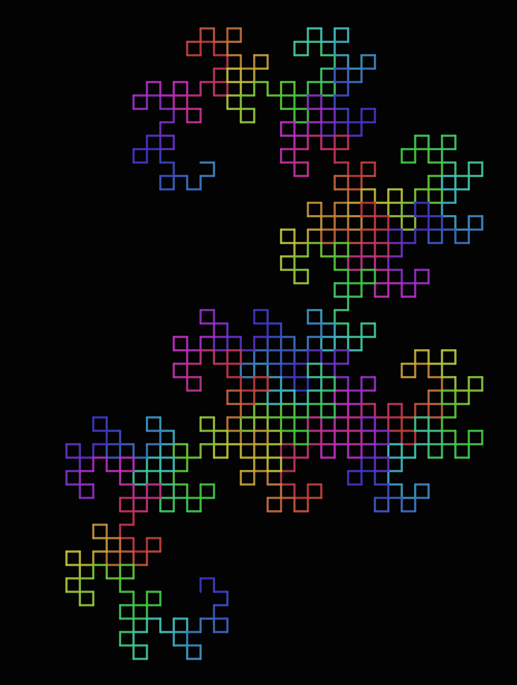
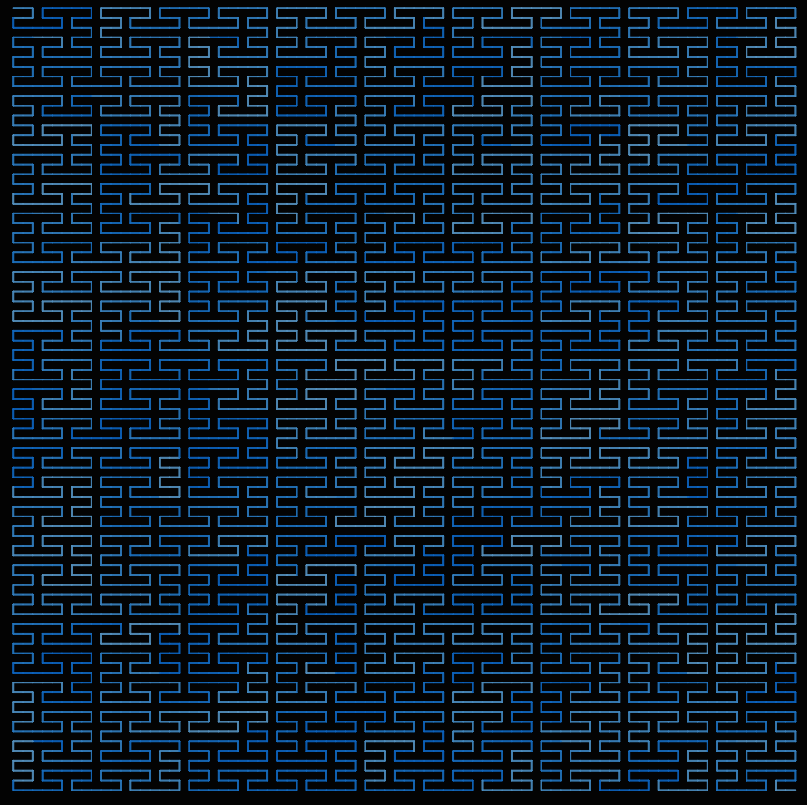

Examples
Stack use
This example shows the use of the [ and ] stack push and pop commands.
simple = LSystem(Dict("F" => "F[t+FoF-F]"), "F")
drawLSystem(simple,
forward = 50,
turn = 90,
iterations = 6,
startingx = 0,
startingy = -150,
filename = "simple.pdf",
showpreview = false)
Koch
The Koch snowflake (also known as the Koch curve, Koch star, or Koch island) is a fractal curve and one of the earliest fractals to have been described. It is based on the Koch curve, which appeared in a 1904 paper titled "On a Continuous Curve Without Tangents, Constructible from Elementary Geometry" by the Swedish mathematician Niels Fabian Helge von Koch.
(Wikipedia)
koch = LSystem(Dict("F" => "F+F-"), "F") # use turn of 60 degrees
drawLSystem(koch,
forward = 5,
turn = 60,
iterations = 6,
startingx = -1800,
startingy = 0,
width = 4000,
height = 4000,
filename = "koch.pdf",
showpreview = false)
koch = LSystem(Dict("F" => "F+F--F+F"), "F") # 4 # 60 degrees
drawLSystem(quadratic_Koch,
forward = 10,
iterations = 2,
turn = 90,
filename = "quadratic_koch.pdf",
showpreview = false)koch_snowflake = LSystem(Dict("F" => "F+F--F+F"), "F-F-F")quadratic_Koch = LSystem(Dict("F" => "tF-F+F+FFF-F-F+F"), "4F+F+F+F")
Peano
The Peano curve is the first example of a space-filling curve to be discovered, by Giuseppe Peano in 1890.
peano = LSystem(Dict("F" => "TF+F-F-toF-F+F+F+F-F"), "3F")
drawLSystem(peano,
turn = 90,
forward = 20,
iterations = 3,
startingx = -250,
filename = "peano.pdf",
showpreview = false)
Peano Gosper
The Peano-Gosper curve is a plane-filling function originally called a "flowsnake" by Bill Gosper and Martin Gardner. The name was invented by Benoit Mandelbrot.
peano_gosper = LSystem(Dict(
"X" => "X+YF++YF-tFX--FXFX-YF+",
"Y" => "-FX+YFYF++YF+FX--FX-Y" ),
"FX") # turn 60°
drawLSystem(peano_gosper,
forward = 10,
turn = 60,
iterations = 4,
startingpen = (0, 0.8, 0.2),
startingorientation = -pi/2,
startingx = -200,
startingy = -50,
filename = "peano-gosper.pdf",
showpreview = false)
32 segments
thirty_two_segment = LSystem(Dict(
"F" => "t-F+F-F-F+F+FF-F+F+FF+F-F-FF+FF-FF+F+F-FF-F-F+FF-F-F+F+F-F+"),
"F+F+F+F")
drawLSystem(thirty_two_segment,
forward=5,
iterations=2,
turn=90,
filename="32segments.pdf",
showpreview=false)
Sierpinski
sierpinski_triangle = LSystem(Dict(
"F" => "G+F+Gt",
"G" => "F-G-F"),
"G") # 60°
drawLSystem(sierpinski_triangle,
forward=3,
startingx=-400,
startingy= -350,
turn=60,
iterations=8,
filename="sierpinski-triangle.pdf",
showpreview=false)
square_curve = LSystem(Dict(
"X" => "XF-F+F-XF+F+XtF-F+F-X"),
"F+XF+F+XF")Dragon curves
dragon_curve = LSystem(Dict(
"F" => "F+G+t",
"G" => "-F-G"),
"F") # 90 degrees
drawLSystem(dragon_curve,
forward = 12,
turn = 90,
iterations = 10,
filename = "dragon_curve.pdf",
showpreview = false)
Hilbert curves
A Hilbert curve (also known as a Hilbert space-filling curve) is a continuous fractal space-filling curve first described by the German mathematician David Hilbert in 1891, as a variant of the space-filling Peano curves discovered by Giuseppe Peano in 1890.
hilbert_curve = LSystem(Dict(
"L" => "+RF-LFL-tFR+",
"R" => "-LF+RFR+FL-"),
"3L") # 90°
drawLSystem(hilbert_curve,
forward = 25,
turn = 90,
iterations = 4,
startingx = -200,
startingy = -200,
filename = "hilbert_curve.pdf",
showpreview = false)
hilbert = LSystem(Dict(
"L" => "+RF-LFL-cFR+",
"R" => "-LF+RFR+FL-"),
"1L")
drawLSystem(hilbert,
forward = 12,
turn = 90,
iterations = 6,
startingx = -450,
startingy = -450,
filename = "hilbert.pdf",
showpreview = false)
hilbert_curve2 = LSystem(Dict(
"X" => "XFYFX+F+YFXFcY-F-XFYFX",
"Y" => "YFXFY-F-XFYFX+F+YFXFY"),
"2X")
drawLSystem(hilbert_curve2,
forward = 10,
turn = 90,
iterations = 4,
startingx = -450,
startingy = -450,
filename = "hilbert_curve2.pdf",
showpreview = false)
Plants
plant = LSystem(Dict(
"F" => "F[-F]cF[+F][F]"),
"F") # use turn eg 17° or 23°
drawLSystem(plant,
forward = 7,
startingpen = (0, 0.8, 0.3),
startingx = 0,
startingy = 460,
startingorientation = -pi/2,
turn = 23,
iterations = 6,
filename = "plant.pdf",
showpreview = false)
plant1 = LSystem(Dict(
"F" => "FF",
"X" => "F−[[cX]+X]+F[+FX]−X"),
"1X")
drawLSystem(plant1,
forward = 3,
turn = 13,
iterations = 7,
startingpen = (0, 0.8, 0.2),
startingorientation = -pi/2,
startingx = -50,
startingy = 450,
filename = "plant1.pdf",
showpreview = false)
branch = LSystem(Dict(
"F" => "FF-[F+F+Fc]+[+F-F-F][+++F+F-F---][---F+F-F---]"),
"1FFFF")
drawLSystem(branch,
forward = 12,
turn = 20,
iterations = 3,
startingpen = (0, 0.9, 0.2),
startingorientation = -pi/2,
startingx = 0,
startingy = 300,
filename = "branch.pdf",
showpreview = false)
Penrose tiling
penrose = LSystem(Dict(
"X" => "PM++QM----YM[-PM----XM]++t",
"Y" => "+PM--QM[---XM--YM]+t",
"P" => "-XM++YM[+++PM++QM]-t",
"Q" => "--PM++++XM[+QM++++YM]--YMt",
"M" => "F",
"F" => ""),
"1[Y]++[Y]++[Y]++[Y]++[Y]") # 36 degrees
drawLSystem(penrose,
forward = 25,
turn = 36,
iterations = 7,
startingpen = (.5, 0.8, 0.2),
startingorientation = -pi/2,
startingx = 0,
startingy = 0,
filename = "penrose.pdf",
showpreview = false)